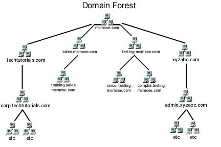

ü߆ Unidad 4 ‚Äî Instalaci√≥n de Servicios de Directorios
üîπ Sistema Operativo de Red (SOR)
Un Sistema Operativo de Red (SOR) es un software que gestiona la infraestructura de una red informática, garantizando que los equipos puedan compartir recursos de manera segura y eficiente.
Sin un SOR, las redes grandes serían un caos: no habría control centralizado sobre archivos, accesos ni seguridad.

Figura 1. Ejemplo de red informática general.
üíª Los ordenadores necesitan un sistema operativo
Así como un ordenador individual necesita un sistema operativo (Windows, Linux o macOS) para funcionar, una red con varios equipos requiere un SOR para gestionar usuarios, permisos y comunicaciones.
⚙️ Diferencias entre sistemas operativos estándar y de red
Los sistemas operativos tradicionales (Windows, macOS, Linux de escritorio) gestionan un único equipo.
Los SOR, en cambio, gestionan toda la red, controlando dispositivos, usuarios y recursos compartidos.

Figura 2. Esquema básico de un sistema operativo de red.
ü§ù Administraci√≥n de redes entre iguales (P2P)
Las redes entre iguales (peer-to-peer / P2P) permiten compartir archivos sin un servidor central:
cada equipo actúa como cliente y servidor al mismo tiempo.

Figura 3. Ejemplo de red entre iguales (P2P).
üîê Problemas de administraci√≥n y seguridad
- Cada usuario decide qué compartir → riesgo de exposición de información.
- Sin organización, los archivos son difíciles de localizar.
- Microsoft introdujo los grupos de trabajo para mejorar la organización, pero sin resolver la seguridad.
üß© Estructura cliente-servidor
El modelo cliente-servidor divide las tareas entre:
- Servidor → proporciona servicios o recursos (correo, archivos, bases de datos...).
- Cliente → solicita y utiliza esos servicios.

Figura 4. Comunicación cliente-servidor.
üîë Ventajas principales
- Centraliza datos y seguridad.
- Mejora la organización y escalabilidad.
- Permite añadir nuevos clientes sin afectar al sistema.
⚠️ Problemas con múltiples servidores
Ejemplo con tres servidores:
| Servidor | Función principal |
|---|---|
| A | Aplicaciones empresariales |
| B | Correo electrónico |
| C | Bases de datos y documentos |
Dificultades comunes:
- Credenciales duplicadas por cada servidor.
- Contraseñas no sincronizadas.
- Baja y alta de usuarios manual.
- Riesgo de errores y descoordinación.
üóÇÔ∏è Servicios de Directorio
Un servicio de directorio es un sistema que almacena, organiza y gestiona información sobre usuarios, dispositivos y recursos de red.

Figura 5. Ejemplo de directorio centralizado.
üéì Ejemplo
En una universidad, los profesores acceden a calificaciones y documentos;
los alumnos, solo a materiales de clase.
Todo se gestiona automáticamente desde el servicio de directorio.
üìÅ Estructura de un servicio de directorio
Cada recurso se considera un objeto con atributos asociados:
| Atributo | Valor |
|---|---|
| Nombre | Carlos Pérez |
| Cargo | Administrador de TI |
| Correo | carlos@empresa.com |
| Acceso a | Servidor de archivos, correo, VPN |

Figura 6. Jerarquía de dominios, unidades organizativas y grupos.
Componentes principales:
| Elemento | Descripción |
|---|---|
| Directorio | Base de datos con la información de la red. |
| Dominio | Conjunto de objetos dentro del directorio. |
| Objeto | Recurso (usuario, equipo, impresora...). |
| Unidad organizativa (OU) | Agrupa objetos por área o departamento. |
| Grupo | Conjunto de usuarios con permisos similares. |
| Controlador de dominio | Servidor que gestiona la base de datos. |
| Catálogo global | Contiene información resumida de todos los objetos. |
| Maestro de operaciones | Gestiona funciones críticas. |
| Árbol / Bosque | Estructuras jerárquicas de dominios. |
| Esquema | Define la estructura de los objetos. |
üßæ Identificaci√≥n y acceso
Cada objeto tiene un DN (Distinguished Name) único.
El sistema DNS se utiliza para gestionar estos nombres, igual que en Internet.
üß± Ejemplos de servicios de directorio
| Servicio | Descripción |
|---|---|
| Active Directory (AD) | Solución de Microsoft. Amplio uso en empresas. |
| OpenLDAP | Implementación libre para Linux. |
| SambaLDAP | Integra OpenLDAP, Kerberos y Samba para compatibilidad Windows/Linux. |
| Otros | Novell Directory Services, Red Hat Directory Server, Apache Directory, etc. |
üåê Protocolo LDAP
LDAP (Lightweight Directory Access Protocol) permite acceder y consultar servicios de directorio.
Es esencial en redes corporativas y educativas.
Figura 7. Esquema del funcionamiento del protocolo LDAP.
üìò Fin de la unidad ‚Äì Instalaci√≥n de servicios de directorios.